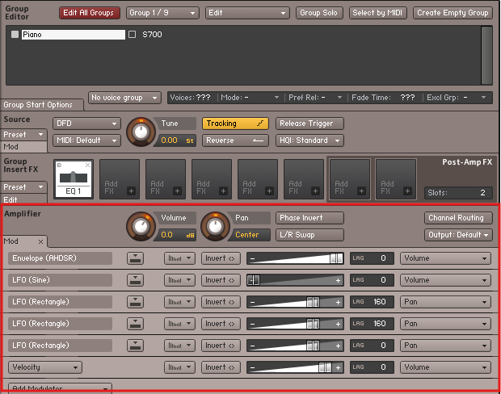

Dicas Importantes
1ª Dica: Segure a tecla "Ctrl" e vá clicando em todos os controles. Isso faz com que eles voltem para a posição inicial. 2ª Dica: Verifique se os controles "Ata" (Ataque) e "Rel" (Release) estão atuando. Caso não estejam, clique na no "Group Editor". Dê um clique no instrumento que você acabou de importar para selecioná-lo. Em seguida, desça até "Amplifier". Se o Envelope (ADSR) e o Velocity não aparecerem, clique em "Mod". É esperado que apareça uma tela como a figura abaixo, com apenas um Envelope (ADSR) e um Velocity.

Caso apareçam mais elementos do que o esperado, como na figura abaixo e seu controle de Release e Ataque não funcionam, será necessário Reinstalar os Moduladores que vieram no Sample, que mostro como fazer aqui Reinstalando Moduladores.
Também pode acontecer de o som ficar "preso", tocando apenas uma nota de cada vez. Para resolver isso, é simples: substitua o valor "1" por "128" em "Voices", conforme ilustrado na figura abaixo. No entanto, essa correção deve ser feita no "Toca Sample" e o instrumento deve ser salvo.

Esta dica, que deixei para o final para não causar confusão: em "Group Insert FX", clique em "Edit" e em um filtro, conforme indicam as setas vermelhas na figura abaixo. (Às vezes, isso trava e é necessário repetir o processo de forma inversa — primeiro o filtro, depois o "Edit"). Fazendo isso, você abrirá o controle do filtro selecionado. Lembre-se de que tudo o que você fizer em "Group Insert FX" será aplicado apenas ao sample que está selecionado, sendo independente do painel do "Toca Sample". Por exemplo, se o sample selecionado tiver muitos agudos, você pode reduzir esses agudos usando o "EQ", como exemplificado abaixo. Esse ajuste será aplicado apenas a este sample e quando ativo, e depois você pode fazer um ajuste fino no painel do "Toca Sample". Evite usar muitos, pois esses filtros ativos em "Group Insert FX",também geram consumo de recursos do seu equipamento.

Se o sample estiver com som muito grave ou agudo observe as oitavas abaixo, tem casos que é necessário ajustar as oitavas no "Tune", conforme a imagem abaixo.
Salvar Snapshot (Save Snapshot):
Essa opção salva uma "foto" dos parâmetros atuais de um instrumento, permitindo que você recupere rapidamente as configurações sem alterar o arquivo principal do instrumento. Snapshots são particularmente úteis salvar a configuração de nossos timbres (Sena). Note que apos Salvar Snapshot não podemos trocar os samples pois quando abrirmos novamente a sena salva, sistema vai entender que o sample que entrou no lugar é o mesmo que estava antes.
Ao final, salve clicando em  se vc já salvou com ("Patch + Samples") agora pode salvar "Patch Only", caso não, recomendo que selecione a opção "Patch + Samples", como ilustrado abaixo.
se vc já salvou com ("Patch + Samples") agora pode salvar "Patch Only", caso não, recomendo que selecione a opção "Patch + Samples", como ilustrado abaixo.
- Patch Only: Salva apenas as configurações do instrumento (parâmetros, efeitos, scripts), sem incluir os samples. Ideal quando os samples já estão no disco e você não precisa movê-los.
- Patch + Samples: Salva as configurações do instrumento junto com os samples. É útil para transferir o instrumento completo, incluindo seus arquivos de áudio.
- Monolith: Combina o patch e os samples em um único arquivo, facilitando o compartilhamento ou armazenamento, já que tudo fica integrado em um só lugar.

Pagina Inicial